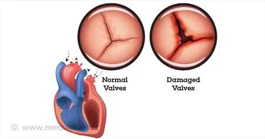
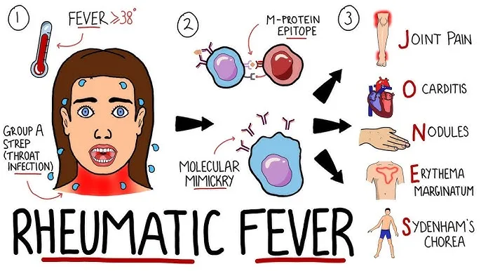
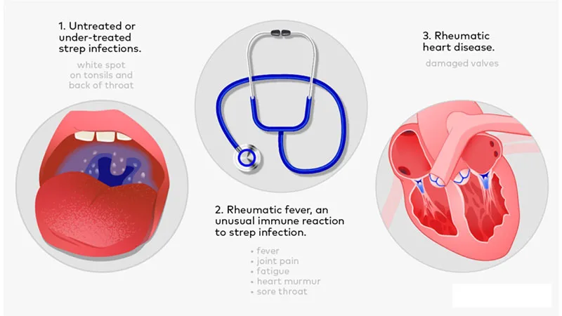
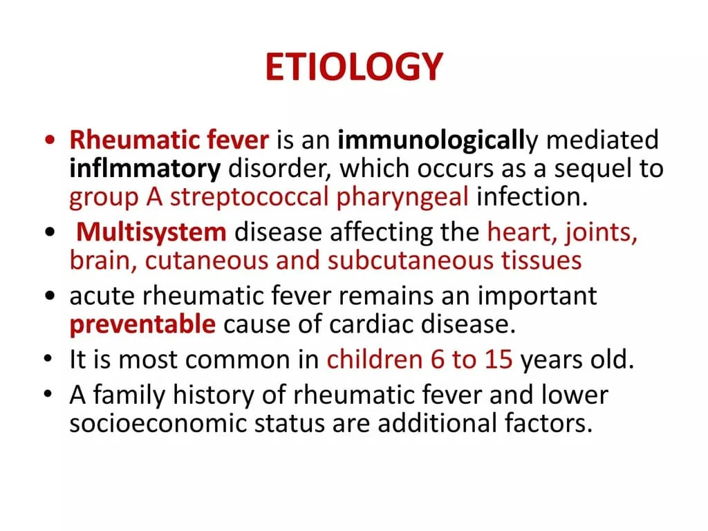
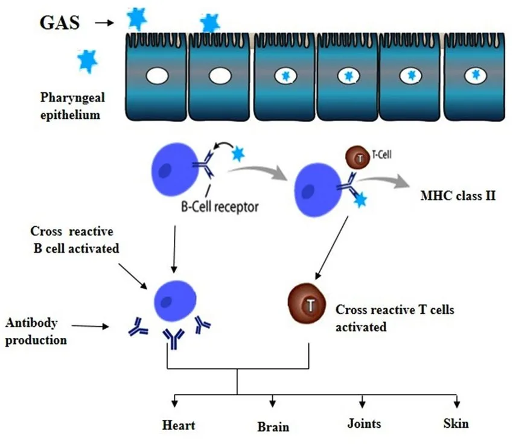
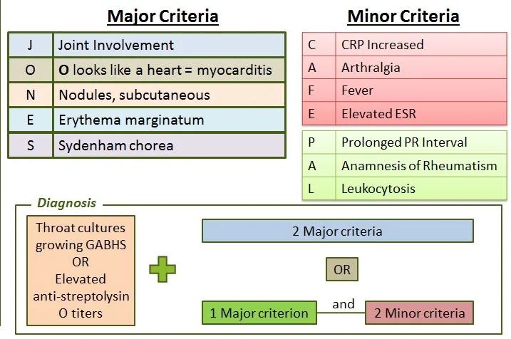
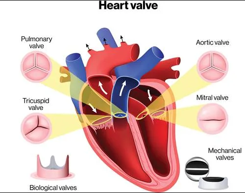

Expanded Nursing Uganda Explanation
Rheumatic heart disease. should be understood beyond a short definition. Link the concept to patient history, focused assessment, common risks, nursing priorities, documentation and evaluation of outcomes.
01 Overview
To understand Rheumatic Heart Disease (RHD), we must first understand its precursor: Acute Rheumatic Fever (ARF). These two conditions are intimately linked in a cause-and-effect relationship.
Acute Rheumatic Fever is a post-streptococcal, systemic inflammatory disease that can affect the heart, joints, brain, and skin.
- It is an autoimmune reaction that occurs as a delayed, non-suppurative (non-pus-forming) sequela of an untreated or inadequately treated Group A Streptococcus (GAS) pharyngeal infection (strep throat).
- It typically manifests 2 to 4 weeks after the initial strep throat infection.
- ARF is considered a reversible condition in its acute phase, meaning the inflammatory manifestations can resolve. However, the cardiac involvement can lead to permanent damage.
- Inflammatory: Involves inflammation of various connective tissues throughout the body.
- Systemic: Can affect multiple organ systems.
- Autoimmune: The body's immune system mistakenly attacks its own tissues.
- Delayed: Occurs after the initial infection has resolved.
- Preventable: Proper treatment of strep throat can prevent ARF.
Rheumatic Heart Disease is the chronic, permanent cardiac damage that results from one or more episodes of Acute Rheumatic Fever.
- It is the most serious complication of ARF , leading to progressive fibrosis, scarring, and deformation of the heart valves, particularly the mitral and aortic valves.
- RHD is the leading cause of acquired heart disease in children and young adults in many parts of the world, especially in low and middle-income countries.
- Chronic: Long-lasting and progressive.
- Permanent Damage: Involves irreversible changes to heart structures.
- Valvular Heart Disease: Primarily affects the heart valves, leading to stenosis (narrowing), regurgitation (leakage), or both.
- Cumulative: Each episode of ARF can add further damage to the heart.
- Think of ARF as the "acute attack" caused by the immune system's reaction to strep.
- RHD is the "scar" left on the heart by that attack.
- Not everyone who gets ARF will develop RHD, but everyone who has RHD first had ARF.
- The severity and recurrence of ARF episodes determine the extent of cardiac damage, leading to RHD.
- Acute Rheumatic Fever (ARF) is the acute inflammatory immune response following a strep throat infection.
- Rheumatic Heart Disease (RHD) is the long-term, permanent heart damage (especially to the valves) that can result from one or more episodes of ARF.
‘rheumatism licks the joint, but bites the whole heart’.
- The Sole Trigger: Acute Rheumatic Fever is exclusively caused by a preceding infection with Group A Streptococcus (GAS) , specifically Streptococcus pyogenes .
- Location of Infection: The GAS infection must be a pharyngeal (throat) infection (i.e., strep throat). Skin infections with GAS (e.g., impetigo) generally do not lead to ARF, though they can cause acute glomerulonephritis.
- Untreated or Inadequately Treated: ARF develops when a GAS pharyngitis is either not treated with antibiotics or not treated sufficiently to eradicate the bacteria. Prompt and appropriate antibiotic treatment of strep throat can effectively prevent ARF.
- Specific Strains: While all GAS strains can cause strep throat, only certain "rheumatogenic" strains are associated with ARF. These strains often have specific M-protein types that are particularly potent in eliciting the autoimmune response.
The development of ARF is a classic example of an autoimmune disease triggered by an infection, primarily through a process called molecular mimicry .
- Initial GAS Infection and Immune Response: When Streptococcus pyogenes infects the pharynx, the body's immune system mounts a response to fight the bacteria.
- Key bacterial components, particularly the M protein (a virulence factor on the surface of GAS), are recognized as foreign antigens.
- The immune system produces antibodies against these GAS antigens.
- Molecular Mimicry: The crucial step in ARF pathogenesis is that some of the bacterial antigens, especially specific epitopes (molecular parts) of the M protein, share structural similarities with proteins found in human tissues. This phenomenon is called molecular mimicry .
- These human proteins are often found in the heart (myosin, tropomyosin, valvular glycoproteins), joints (collagen), brain (neuronal antigens in basal ganglia), and skin.
- Cross-Reactivity and Autoimmune Attack: Due to molecular mimicry, the antibodies and T-lymphocytes (a type of white blood cell) produced by the immune system to fight the GAS infection cross-react with these structurally similar human tissues.
- The immune system mistakenly identifies these healthy human tissues as foreign invaders and launches an autoimmune attack against them.
- Inflammation and Tissue Damage: This autoimmune attack leads to widespread inflammation in various parts of the body.
- The specific manifestations depend on which tissues are targeted by the cross-reactive immune response: Heart (Carditis): Inflammation of the heart muscle (myocarditis), pericardium (pericarditis), and endocardium (endocarditis), particularly the heart valves. This is the most serious manifestation and can lead to permanent damage (RHD).
- Joints (Arthritis): Inflammation of the large joints (e.g., knees, ankles, elbows, wrists). Typically migratory polyarthritis.
- Brain (Sydenham Chorea): Inflammation in the basal ganglia, leading to involuntary movements.
- Skin (Erythema Marginatum, Subcutaneous Nodules): Inflammatory skin lesions and subcutaneous nodules.
- Aschoff Bodies: A characteristic pathological finding in the heart in ARF is the Aschoff body . These are granulomatous lesions consisting of swollen collagen fibers, inflammatory cells (lymphocytes, plasma cells), and characteristic multinucleated giant cells called Anitschkow cells (or "caterpillar cells").
- Aschoff bodies are considered pathognomonic for ARF and contribute to the inflammation and damage within the myocardium and valves.
The symptoms of ARF appear 2-4 weeks after an untreated or inadequately treated GAS pharyngeal infection. The manifestations can be widespread and affect various organ systems.
These are the most common and significant clinical signs of ARF.
- J - Joints (Polyarthritis): Migratory Polyarthritis: The most common major manifestation, affecting about 75% of patients.
- Typically affects large joints (knees, ankles, elbows, wrists).
- The inflammation moves from one joint to another over hours to days (migratory).
- Extremely painful but responds dramatically and quickly to NSAIDs.
- Self-limiting and non-deforming; does not cause permanent joint damage.
- O - Myocarditis (Carditis): Pancarditis: Inflammation of all three layers of the heart (pericardium, myocardium, endocardium).
- Occurs in about 50-60% of cases and is the only manifestation that can lead to permanent heart damage (RHD) .
- Signs/Symptoms: New or changing heart murmur: Especially mitral regurgitation (most common) or aortic regurgitation.
- Pericarditis: Pericardial friction rub, chest pain, distant heart sounds.
- Cardiomegaly: Enlarged heart on chest X-ray.
- Congestive Heart Failure: Tachycardia, dyspnea, orthopnea, crackles, peripheral edema (in severe cases), gallop rhythm.
- Tachycardia out of proportion to fever.
- N - Nodules (Subcutaneous Nodules): Rare: Occurs in <5% of cases, usually in severe ARF.
- Description: Small, firm, painless, mobile nodules (0.5-2 cm) over bony prominences (e.g., elbows, knees, knuckles, scalp, vertebrae).
- Appear late in the course of ARF.
- E - Erythema Marginatum: Rare: Occurs in <5% of cases.
- Description: A distinctive, non-pruritic (non-itchy) rash.
- Characterized by pink or red macular lesions with clear centers and serpiginous (snake-like) or wavy borders.
- Typically found on the trunk and proximal extremities, but never on the face .
- Often evanescent (fades quickly) and exacerbated by heat.
- S - Sydenham Chorea (St. Vitus' Dance): Late Manifestation: Can appear months after the initial strep infection, sometimes as the only major manifestation.
- Description: A neurological disorder characterized by abrupt, involuntary, purposeless movements (chorea), muscular weakness, and emotional lability.
- Typically affects the face, hands, and feet.
- Self-limiting (usually resolves within weeks to months) but can be very distressing.
- Worsens with stress and disappears during sleep.
These are less specific but contribute to the diagnostic picture.
- Clinical Findings: Fever: Usually >38.0°C (100.4°F).
- Arthralgia: Joint pain without objective signs of inflammation (i.e., no redness, swelling). If polyarthritis is present, arthralgia cannot be used as a minor criterion.
- Laboratory Findings (Inflammatory Markers): Elevated Erythrocyte Sedimentation Rate (ESR): A non-specific marker of inflammation. (>60mm/hr)
- Elevated C-Reactive Protein (CRP): Another non-specific marker of inflammation. (above 3mg/dl)
- Leukocytosis
- Electrocardiographic (ECG) Findings: Prolonged PR interval: Indicates delayed conduction through the AV node, suggestive of carditis, but not specific for ARF. (Must be absent of other causes like first-degree AV block).
- C – CRP Increased
- A – Arthralgia (Joint pain)
- F – Fever (> 38.5 degrees Celicius)
- E – Elevated ESR (>60mm/hr)
- P – Prolonged PR Interval
- A – Anamnesis (suggestive of rheumatism)
- L – Leukocytosis
The diagnosis is primarily clinical, relying on a set of criteria known as the Jones Criteria, which combine major and minor clinical manifestations with evidence of a preceding Group A Streptococcus (GAS) infection.
The diagnosis of initial ARF requires:
- Evidence of a Preceding Group A Streptococcus (GAS) Infection PLUS
- Specific Combination of Major and Minor Manifestations
- Must be present for diagnosis!
- Positive throat culture for GAS.
- Positive rapid streptococcal antigen test.
- Elevated or rising streptococcal antibody titers (e.g., Antistreptolysin O [ASO] titer, Anti-DNase B titer) – most reliable evidence , especially if symptoms are delayed.
- For Populations with Low Risk of ARF (e.g., most developed countries): 2 Major Criteria
- 1 Major and 2 Minor Criteria
- For Populations with Moderate-to-High Risk of ARF (e.g., many developing countries): 2 Major Criteria
- 1 Major and 2 Minor Criteria
- Note: In these populations, a lower threshold for minor criteria is often accepted. For example, specific ranges for ESR/CRP might be used, and monoarthralgia (pain in one joint) might be considered a minor criterion if polyarthralgia is not present.
- A prolonged PR interval on ECG can be considered a minor criterion unless carditis is already a major criterion.
- Arthralgia cannot be used as a minor criterion if arthritis is a major criterion.
Cardiac involvement, or rheumatic carditis , is the most serious manifestation of Acute Rheumatic Fever (ARF) because it is the only one that can lead to permanent disability and death. When the inflammation from ARF leaves lasting structural damage to the heart, particularly the valves, it is then diagnosed as Rheumatic Heart Disease (RHD).
Rheumatic carditis is an inflammatory process that can affect any of the three layers of the heart (pancarditis).
- Endocarditis (Valvulitis): This is the most common and clinically significant form of carditis in ARF.
- Affected Valves: The mitral valve is most frequently involved (70-80% of cases), often leading to mitral regurgitation. The aortic valve is the second most common (30-50% of cases), leading to aortic regurgitation. The tricuspid and pulmonary valves are rarely affected in isolation.
- Pathology: Inflammation of the valvular endothelium leads to swelling, loss of continuity, and the formation of small, sterile vegetations (verrucae) along the lines of closure. These verrucae are composed of fibrin and platelets and contribute to valve dysfunction.
- Clinical Signs: New or changing heart murmurs are the hallmark. Mitral Regurgitation: A high-pitched, blowing holosystolic murmur heard best at the apex, radiating to the axilla.
- Aortic Regurgitation: A high-pitched, decrescendo diastolic murmur heard best at the left sternal border.
- Myocarditis: Inflammation of the heart muscle itself.
- Pathology: Characterized by the presence of Aschoff bodies (histopathological hallmark of ARF) in the interstitial tissue, along with diffuse inflammatory infiltrates. This inflammation can weaken the heart muscle.
- Clinical Signs: Tachycardia: Especially tachycardia out of proportion to fever.
- Cardiomegaly: Enlarged heart on chest X-ray.
- Symptoms of Heart Failure: Dyspnea, fatigue, orthopnea, peripheral edema (in severe cases), gallop rhythm.
- ECG changes: Prolonged PR interval (first-degree AV block) is common but not specific.
- Pericarditis: Inflammation of the pericardial sac surrounding the heart.
- Pathology: Accumulation of fluid (pericardial effusion) or fibrin deposits.
- Clinical Signs: Pericardial friction rub: A characteristic grating sound heard on auscultation.
- Chest pain: Often sharp, pleuritic, and worse with inspiration or lying flat.
- Distant heart sounds: If a significant effusion is present.
- Signs of tamponade: (rare in ARF but possible with large effusions).
Rheumatic Heart Disease develops as a chronic sequel of rheumatic carditis. The acute inflammation of ARF resolves, but the damage inflicted on the heart valves becomes permanent and often progressive.
- Healing and Scarring: After the acute inflammatory phase of ARF subsides, the damaged heart valves undergo a process of healing that involves fibrosis, calcification, and retraction .
- The sterile verrucae on the valve leaflets become fibrosed.
- Valvular Deformities and Dysfunction: This scarring and architectural distortion lead to two main types of valvular dysfunction: Stenosis: Narrowing of the valve opening, impeding forward blood flow. This often develops years after the initial ARF episode.
- Regurgitation (Insufficiency): Incomplete closure of the valve, allowing backward blood flow (leakage). This can be present acutely during ARF or develop chronically.
- Over time, these dysfunctions place increased workload on the heart chambers, leading to hypertrophy, dilation, and eventually heart failure.
- Most Commonly Affected Valves in RHD: Mitral Stenosis: The most common form of RHD, occurring due to fusion of the commissures, thickening and shortening of chordae tendineae, and calcification. This typically manifests 5-10 years or more after the initial ARF. Auscultation: Diastolic rumble at the apex, opening snap.
- Mitral Regurgitation: Can be present acutely with carditis or persist chronically due to leaflet damage and annular dilation.
- Aortic Stenosis: Less common than mitral stenosis, often coexisting with aortic regurgitation.
- Aortic Regurgitation: Can persist from the acute phase or develop chronically.
- Mixed Valvular Disease: It is common to have a combination of stenosis and regurgitation affecting multiple valves (e.g., mitral stenosis and regurgitation, often with aortic involvement).
- Factors Influencing Progression: Severity of initial carditis: More severe acute carditis increases the risk of RHD.
- Recurrent episodes of ARF: Each subsequent ARF episode further damages the valves, accelerating the progression to severe RHD. This is why secondary prophylaxis is so critical.
- Age at first attack: Younger age at first ARF episode is associated with a higher risk of developing RHD and more severe RHD.
- Genetic predisposition.
- Clinical Consequences of RHD: Heart Failure: Due to chronic valvular overload and myocardial dysfunction.
- Arrhythmias: Atrial fibrillation is common with mitral valve disease.
- Embolic Events: Due to clot formation in dilated atria (especially with atrial fibrillation) or on damaged valves.
- Infective Endocarditis: Damaged valves are more susceptible to bacterial colonization.
- Pulmonary Hypertension: Particularly with severe mitral stenosis.
The key is to identify the characteristic valvular changes caused by previous ARF.
- History: Previous history of ARF: This is a crucial indicator, though many patients with RHD may not recall a documented ARF episode.
- History of recurrent sore throats: Especially in childhood, indicative of potential past GAS infections.
- Symptoms of valvular heart disease: Dyspnea (shortness of breath): Especially on exertion, a primary symptom of heart failure due to valvular dysfunction.
- Fatigue, weakness.
- Palpitations: Due to arrhythmias (e.g., atrial fibrillation in mitral valve disease).
- Chest pain.
- Syncope (fainting).
- Edema: Peripheral or pulmonary edema (signs of heart failure).
- Symptoms of stroke or transient ischemic attack: Due to embolic events from damaged valves or atrial fibrillation.
- Physical Examination: Cardiac Auscultation: This is paramount. The presence of characteristic heart murmurs is often the first clue. Mitral Stenosis: Low-pitched diastolic rumble at the apex, often with an opening snap. Loud S1.
- Mitral Regurgitation: Holosystolic murmur at the apex, radiating to the axilla.
- Aortic Stenosis: Systolic ejection murmur at the right upper sternal border, radiating to the carotids.
- Aortic Regurgitation: High-pitched, decrescendo diastolic murmur at the left sternal border.
- Signs of Heart Failure: Tachycardia, tachypnea, crackles in lungs, elevated jugular venous pressure (JVP), hepatomegaly, peripheral edema.
- Peripheral Signs of Valvular Disease: (e.g., water-hammer pulse in severe aortic regurgitation).
- Echocardiography (Echo): The gold standard for diagnosing and assessing the severity of RHD .
- Transthoracic Echocardiography (TTE): A non-invasive ultrasound of the heart that provides detailed images of heart chambers, valves, and blood flow.
- What it reveals: Valvular Morphology: Leaflet thickening, calcification, commissural fusion (especially in mitral stenosis), chordal thickening and fusion, subvalvular apparatus abnormalities.
- Valvular Function: Presence and severity of stenosis (measured by pressure gradients, valve area) and regurgitation (measured by jet size, regurgitant volume).
- Chamber Dimensions and Function: Left atrial and ventricular enlargement, ventricular hypertrophy, systolic and diastolic dysfunction.
- Pulmonary Artery Pressure: Indication of pulmonary hypertension.
- Doppler Echocardiography: Crucial for assessing blood flow dynamics across the valves and quantifying the severity of stenosis and regurgitation.
- Importance: Can detect subclinical RHD (valvular changes without overt symptoms), allowing for early intervention and secondary prophylaxis.
- Chest X-ray (CXR): Can show cardiomegaly (enlarged heart silhouette), which may suggest significant valvular disease or heart failure.
- May show signs of pulmonary congestion or pulmonary edema in cases of left-sided heart failure (e.g., mitral stenosis, mitral regurgitation).
- Calcification of heart valves may occasionally be visible.
- Limited utility for definitive diagnosis of specific valvular lesions but provides useful contextual information.
- Not diagnostic for RHD itself , but can show changes associated with valvular heart disease and its complications.
- Findings may include: Left atrial enlargement: Often seen in mitral stenosis or regurgitation.
- Left ventricular hypertrophy: In response to pressure or volume overload (e.g., aortic stenosis, aortic regurgitation).
- Right ventricular hypertrophy: With significant pulmonary hypertension.
- Arrhythmias: Atrial fibrillation is common, particularly with mitral stenosis and left atrial enlargement.
- Conduction abnormalities.
Aims of Management:
- Treat the acute inflammatory process of ARF.
- Prevent recurrences of ARF, which cause further cardiac damage.
- Manage the complications of established RHD (heart failure, arrhythmias).
- Correct the structural damage to the heart valves through surgical intervention when necessary.
The focus during ARF is on eradicating the GAS infection, suppressing the inflammatory response, and providing supportive care.
- Eradication of Group A Streptococcus (GAS) Infection (Primary Prophylaxis): Goal: To eliminate any remaining GAS bacteria from the throat to prevent further antigenic stimulation.
- Antibiotic of choice: Penicillin. Benzathine Penicillin G: Single intramuscular injection (1.2 million units for adults/children >27kg, 600,000 units for children <27kg). This is preferred due to excellent compliance.
- Oral Penicillin V: 250 mg 2-3 times daily for 10 days. Requires strict adherence.
- Allergy to Penicillin: Erythromycin or a first-generation cephalosporin can be used.
- Anti-inflammatory Therapy: Goal: To suppress the acute inflammatory manifestations and alleviate symptoms.
- Aspirin: Primary treatment for arthritis and fever. High doses (e.g., 50-75 mg/kg/day in divided doses) are used.
- Rapidly relieves joint pain within 24-48 hours.
- Continued for 2-6 weeks, with gradual tapering as inflammatory markers (ESR, CRP) normalize.
- Corticosteroids (Prednisone): Indicated for moderate-to-severe carditis (e.g., with cardiomegaly, heart failure, or significant pericardial effusion).
- High doses (e.g., 1-2 mg/kg/day) for 2-4 weeks, followed by a gradual taper over several weeks.
- Provides more potent anti-inflammatory effect and can prevent progression of severe carditis.
- NSAIDs (non-steroidal anti-inflammatory drugs): Can be used for mild arthritis if aspirin is contraindicated or not tolerated.
- Supportive Care: Bed Rest: Recommended for patients with carditis, ranging from strict bed rest for severe carditis and heart failure to reduced activity for mild carditis or arthritis only. Activity is gradually increased as symptoms resolve.
- Management of Heart Failure: Diuretics (to reduce fluid overload), ACE inhibitors (to reduce afterload), and rarely digoxin for severe systolic dysfunction.
- Management of Sydenham Chorea: Sedatives (e.g., benzodiazepines) or anticonvulsants (e.g., valproic acid, carbamazepine) may be needed for severe chorea.
- Secondary Prophylaxis (Prevention of Recurrent ARF): Crucial for preventing progression to RHD or worsening existing RHD.
- Continuous antibiotic administration to prevent any future GAS infections.
- Drug of choice: Benzathine Penicillin G (1.2 million units IM every 3-4 weeks). This is the most effective due to guaranteed compliance.
- Oral Penicillin V: Twice daily if IM injections are refused or not feasible, but compliance is a major issue.
- Duration of Secondary Prophylaxis: ARF without carditis: 5 years or until age 21 (whichever is longer).
- ARF with carditis but no residual heart disease: 10 years or until age 21 (whichever is longer).
- ARF with residual heart disease (RHD): At least 10 years or until age 40 (whichever is longer); often lifelong.
Once RHD is established, management focuses on secondary prophylaxis (as above), managing complications, and surgical correction of severe valvular lesions.
- Medical Management: Secondary Prophylaxis: Continues to be the cornerstone to prevent further damage.
- Heart Failure Management: Diuretics: To manage fluid retention and congestion.
- ACE Inhibitors/ARBs: To reduce afterload and improve cardiac function.
- Beta-blockers: For heart rate control and symptom management in select cases.
- Digoxin: For rate control in atrial fibrillation or in severe systolic heart failure.
- Arrhythmia Management: Atrial Fibrillation: Common with mitral valve disease. Requires rate control (beta-blockers, calcium channel blockers, digoxin) and anticoagulation (warfarin or DOACs) to prevent embolic stroke.
- Infective Endocarditis Prophylaxis: Generally no longer recommended for most RHD patients, unless they have prosthetic valves or a history of infective endocarditis. Consult current guidelines.
- Regular Follow-up: With a cardiologist, including serial echocardiograms to monitor the progression of valvular disease and cardiac function.
- Surgical Management (Valve Repair or Replacement): Indication: Reserved for severe RHD when valvular dysfunction leads to significant symptoms, hemodynamic compromise, or progressive heart enlargement despite optimal medical therapy.
- Types of Procedures: Valve Repair: Preferred option if feasible, especially for mitral regurgitation or less severe mitral stenosis. Techniques include commissurotomy (surgical or balloon), annuloplasty (repair of the valve ring), or chordal repair. Percutaneous Balloon Valvuloplasty: A less invasive option for suitable cases of mitral stenosis.
- Valve Replacement: If repair is not possible or inadequate. Mechanical Valves: Durable, but require lifelong anticoagulation (warfarin).
- Bioprosthetic Valves (Tissue Valves): Do not require lifelong anticoagulation, but are less durable and may require re-replacement in 10-15 years, especially in younger patients.
- Timing of Surgery: Crucial to balance the risks of surgery against the benefits of preventing irreversible myocardial damage. Guidelines consider symptoms, severity of regurgitation/stenosis, and left ventricular function.
- Understanding the Disease: Educate patients and families about ARF and RHD, the importance of prophylaxis, and signs/symptoms of complications.
- Adherence to Medications: Emphasize the critical importance of continuous secondary prophylaxis and other prescribed medications.
- Healthy Lifestyle: Balanced diet, regular exercise (as tolerated), smoking cessation.
- Family Planning: Women with RHD need counseling regarding pregnancy, as it can worsen their cardiac condition.
- Acute Pain related to inflammatory process in joints (arthritis) and/or pericardium (pericarditis).
- Activity Intolerance related to cardiac inflammation (carditis), joint pain, and/or fatigue.
02 Nursing Uganda Clinical Lens
Use Rheumatic heart disease. as a practical nursing topic, not only a memorized definition. Prioritize airway, breathing, circulation, pain, asepsis, wound healing and early complication detection.
- What to understand first: define rheumatic heart disease., identify the normal or expected pattern, then explain what changes when the patient is unwell.
- Why it matters in care: the nurse must recognize risk early, explain findings clearly, document accurately and know when to escalate.
- How to revise it: connect each point to assessment, nursing diagnosis or care problem, intervention, rationale and evaluation.
03 Assessment Guide
- Vital signs, pain, bleeding, perfusion, level of consciousness and injury pattern.
- Wound appearance, drainage, odour, swelling, temperature and surrounding skin.
- Fluid balance, mobility, nutrition, surgical site risk and ordered investigations.
04 Nursing Priorities, Rationales and Outcomes
- Stabilize urgent problems first, then prepare for investigations or theatre care.
- Maintain aseptic technique, pain control, wound care and documentation.
- Prevent shock, infection, pressure injury, deep vein thrombosis and delayed healing.
The rationale for these priorities is patient safety: nursing actions should prevent deterioration, reduce discomfort, support recovery and create clear evidence for the next caregiver.
- Expected outcome: The patient remains stable, wound healing progresses, pain is controlled and complications are recognized early.
05 Patient Teaching and Revision Check
- Explain rheumatic heart disease. in simple language the patient or caregiver can repeat back.
- Teach warning signs, medicine or follow-up instructions, hygiene or lifestyle points where relevant.
- For exams, prepare a short answer using: definition, causes or risk factors, signs, assessment, management, complications and prevention.
- For ward practice, document baseline findings, actions taken, patient response and the plan for review.
Illustrations and Diagrams (19)








11 more diagrams available — open the lesson for full illustrations.
Related Video Lectures
Watch nursing lecture videos on YouTube for this topic. Opens in a new tab.
Watch on YouTubeExternal link: YouTube may use its own cookies and terms. Nursing Uganda is not affiliated with YouTube.